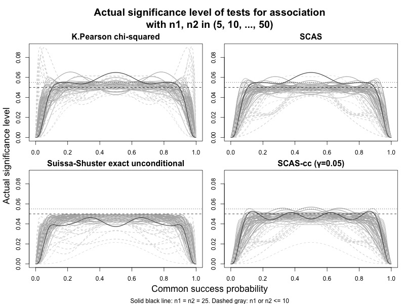

Test for association and equivalence test produced by scoreci() and pairbinci()
If you want to know whether the observed proportion in group 1 is “significantly different” from the proportion in group 2, then you need a test for association, or superiority test. Such a test is based on the null hypothesis that (i.e. , , or ). The superiority tests described below give consistent results whichever contrast is chosen (RD, RR or OR).
Sometimes, you might want to demonstrate the opposite, i.e. that the proportion in group 1 is not smaller (or not larger) than the proportion in group 2. For example, if you want to show that a new treatment works at least as well as an established comparator. In this case you need a non-inferiority test. The null hypothesis for such a test would be where , or where . is called the “non-inferiority margin”. (The direction of the inequality depends on whether the outcome is a positive or negative one, e.g. cure rate or adverse event rate.)
To demonstrate equivalence (i.e. no difference in either direction), you would conduct two one-sided tests, e.g. with and . If conducted using a 2.5% significance level, the tests would be significant if the corresponding 95% confidence interval falls entirely within .
Unstratified superiority test (2x2 test for association)
The p-value for the test for association is named
pval2sided in the scoreci() output. When the
skewness correction is omitted, this test is equivalent to the Egon
Pearson ‘N-1’ chi-squared test, which has been recommended over the
conventional Karl Pearson test (Campbell 2007):
scoreci(x1 = 7, n1 = 34, x2 = 1, n = 34, skew = FALSE)$pval[, 1:2]
#> chisq pval2sided
#> 5.025 0.025
scoreci(x1 = 7, n1 = 34, x2 = 1, n = 34, skew = FALSE, contrast = "RR")$pval[, 1:2]
#> chisq pval2sided
#> 5.025 0.025
scoreci(x1 = 7, n1 = 34, x2 = 1, n = 34, skew = FALSE, contrast = "OR")$pval[, 1:2]
#> chisq pval2sided
#> 5.025 0.025
suppressWarnings(k_pearson <- chisq.test(x = matrix(c(7, 1, 27, 33), nrow = 2), correct = FALSE)$statistic)
pchisq(k_pearson * ((34+34-1)/(34+34)), df = 1, lower.tail = FALSE)
#> X-squared
#> 0.025The direct equivalence with the ‘N-1’ chi-squared test also holds when the skewness correction is included, if group sizes are equal (see below). If group sizes are unequal, then the SCAS two-sided test is an improved variant of the chi-squared test.
scoreci(x1 = 7, n1 = 34, x2 = 1, n = 34, skew = TRUE)$pval[, 1:2]
#> chisq pval2sided
#> 5.025 0.025The plot below illustrates the type I error rates achieved by different tests for small to medium equal and unequal sample sizes. The skewness corrected test fixes a deficiency of the chi-squared test, which can severely violate the nominal significance level when group sample sizes differ by a factor of 4 or more. The SCAS test does not guarantee that the nominal significance level is never violated, but rather fluctuates around it, in a similar manner to the “lucky n” phenomenon for the single proportion described by (Brown, Cai, and DasGupta 2001). Violations are relatively infrequent (22%, vs 44% for chi-squared), with significance level rarely exceeding 5.5% (3%, vs 11% for chi-squared), and converging towards the nominal 5% for larger sample sizes. The example case with (solid black curve) plotted by (Fagerland MW 2017, fig. 4.4) is very unrepresentative, and remains an anomolous case for the SCAS test, while type I error rates for unequal sample sizes are generally shifted downwards. For further improved control of type I error, a small continuity adjustment () applied to the SCAS test achieves performance that is more successful than the Fisher mid-P test at approximating the Suissa-Shuster exact unconditional test.

Unstratified non-inferiority test
The pval item in the scoreci() output also
includes pval_left and pval_right, for a pair
of one-sided tests conducted against a user-specified value of the
contrast parameter,
,
to cater for non-zero or non-unity null hypotheses for equivalence or
non-inferiority tests. Only one of these tests will be used in any given
case - depending on whether the outcome is positive (e.g. cure rate) or
negative (e.g. mortality rate). For example, if the outcome measure is a
cure rate, and you want to demonstrate non-inferiority of a new
treatment, you might set a non-inferiority margin for RD as -0.1, and
use pval_right (the probability of the observed data or a
larger difference to the right, if the true difference is
)
for the one-sided test. Whereas if the outcome measure was mortality
rate, the direction of “non-inferiority” is reversed, so you would use a
positive value for
with pval_left.
The one-sided test is analogous to the Farrington-Manning test, but not identical to it, due to the ‘N-1’ variance bias correction and skewness correction, both of which provide improved control of type I error (see (Laud 2017), and (Laud and Dane 2014), which used the label GNbc for SCAS. Note the type I error for the Farrington-Manning test is identical to the one-sided coverage probability for the Mee interval).
See below for an example analysis of a clinical trial testing the non-inferiority of cure rates for a new antibiotic against an established comparator treatment, with a non-inferiority margin of -12.5% (Torres et al. 2018):
reprove <- scoreci(x1 = 245, n1 = 356, x2 = 270, n2 = 370, theta0 = -0.125)
reprove$estimates
#> lower est upper level x1 n1 x2 n2 p1hat p2hat p1mle p2mle
#> [1,] -0.108 -0.0415 0.0246 0.95 245 356 270 370 0.688 0.73 0.688 0.73
reprove$pval[, 3:6]
#> theta0 scorenull pval_left pval_right
#> -0.12500 2.47516 0.99334 0.00666Stratified test
For stratified datasets (2 x 2 x k tables), the “conventional” test for association is the Cochran-Mantel-Haenszel (CMH) test. Unlike in the single stratum case, the CMH test already incorporates the ‘N-1’ variance bias correction.
scoreci() permits a range of different weighting schemes
for stratified analysis - when Mantel-Haenszel weighting is used for
contrast = "RD" or contrast = "RR" or IVS
weighting for contrast = "OR", the stratified SCAS
two-sided test is a skewness-corrected version of the CMH test. As for
the unstratified case, if group sizes are equal, the skewness correction
term is zero.
The one-sided test is analogous to a stratified version of an ‘N-1’ adjusted and skewness-corrected Farrington-Manning test. This is achieved by reframing Miettinen-Nurminen’s score statistic as a normally distributed z-statistic instead of a chi-squared statistic.
For example, analysis of the above clinical trial is repeated with adjustment for a stratification factor (geographic region) as follows:
x1 = c(21, 76, 73, 75)
n1 = c(29, 96, 124, 107)
x2 = c(19, 73, 91, 87)
n2 = c(27, 95, 130, 118)
data_array <- aperm(array(c(x1, x2, n1 - x1, n2 - x2), dim = c(4, 2, 2)), c(2, 3, 1))
reprove_strat <- scoreci(x1 = c(21, 76, 73, 75),
n1 = c(29, 96, 124, 107),
x2 = c(19, 73, 91, 87),
n2 = c(27, 95, 130, 118),
stratified = TRUE,
theta0 = -0.125)
reprove_strat$pval
#> chisq pval2sided theta0 scorenull pval_left pval_right
#> [1,] 1.6 0.206 -0.125 2.45 0.993 0.00711
reprove_cmh <- mantelhaen.test(data_array, correct = FALSE)
reprove_cmh$p.value
#> [1] 0.206Tests for paired binomial proportions
The two-sided test given by pairbinci() (for any
contrast) is an ‘N-1’ adjusted version of the McNemar test (the skewness
correction term is zero at the null hypothesis value of
).
In an extensive evaluation of many thousands of sample sizes and
correlations, the paired SCAS two-sided test did not violate the nominal
significance level at any point, suggesting that the over-conservative
“continuity corrected” version given by default in
mcnemar.test() is superfluous.
pairbinci(x = c(1, 1, 7, 12), skew = TRUE)$pval
#> chisq pval2sided theta0 scorenull pval_left pval_right
#> [1,] 4.29 0.0384 0 -2.07 0.0192 0.981
pairbinci(x = c(1, 1, 7, 12), skew = FALSE)$pval
#> chisq pval2sided theta0 scorenull pval_left pval_right
#> [1,] 4.29 0.0384 0 -2.07 0.0192 0.981
pairbinci(x = c(1, 1, 7, 12), skew = FALSE, contrast = "RR")$pval
#> chisq pval2sided theta0 scorenull pval_left pval_right
#> [1,] 4.29 0.0384 1 -2.07 0.0192 0.981
mcnem <- mcnemar.test(x = matrix(c(1, 1, 7, 12), nrow = 2), correct = FALSE)$statistic
names(mcnem) <- NULL
pchisq(mcnem * (21-1)/21, df = 1, lower.tail = FALSE)
#> [1] 0.0384The paired one-sided test is a skewness-corrected and ‘N-1’ adjusted version of Nam’s score test (Nam 1997). Type I error rates for this test, represented by one-sided confidence interval non-coverage probabilities, are examined in [Laud2025, under evaluation].